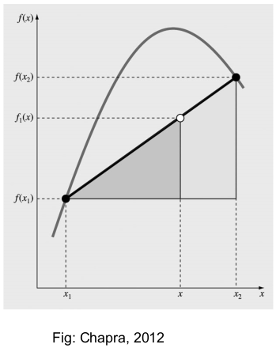
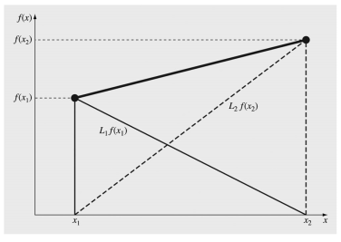
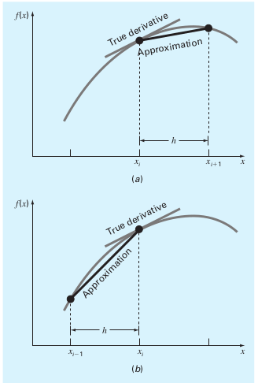
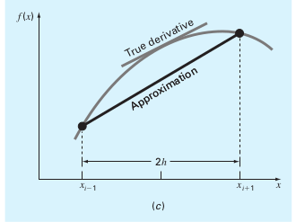
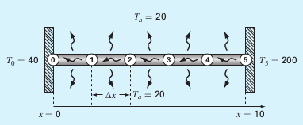

Interpolation
Contents
Interpolation¶
FIZ228 - Numerical Analysis
Dr. Emre S. Tasci, Hacettepe University
In our “Regression” lecture, we talked about fitting a function/model/curve that passes as close as possible to a given set of data points. But sometimes we find ourselves in a case where we have clearly defined points and would like to know about the behaviour between these points. This method of estimating the intermediate values while retaining the known values is known as interpolation.
The given data points act as the boundary conditions, usually fixed and thus very suitable for interpolation applcations. We are given a partial look on the system which corresponds to the initial conditions.
As was the case in regression, there is always a risk of overfitting alas in the interpolation, we must hit all the given data (within an error tolerance that is related to the measurements.
import numpy as np
import matplotlib.pyplot as plt
Polynomial Interpolation¶
Revisiting our discussion in regression, we can always fit a set of \(n\) data points using a polynomial of \((n-1)\)th order:
\(i\) |
\(x_i\) |
\(y_i\) |
|---|---|---|
1 |
10 |
25 |
2 |
20 |
70 |
3 |
30 |
380 |
4 |
40 |
550 |
5 |
50 |
610 |
6 |
60 |
1220 |
7 |
70 |
830 |
8 |
80 |
1450 |
Polyfit, poly1d, polyval and poly + roots¶
We can use numpy’s built in polynomial functions to fit (polyfit), evaluate (poly1d & polyval) and even construct polynomials from roots (poly) or vice versa (roots).
data = np.array([range(10,90,10),[25,70,380,550,610,1220,830,1450]]).T
x = data[:,0]
y = data[:,1]
p = np.polyfit(x,y,len(x)-1)
print(p)
xx = np.linspace(10,80,100)
yy = np.zeros(len(xx))
n = len(x)
for k in range(n):
yy += p[k]*xx**(n-k-1)
print("-"*70)
# we could as well had used poly1d function
# to functionalize the polynomial 8)
f = np.poly1d(p)
print(f)
print(f(x))
# another alternative is to use polyval:
g = np.polyval(p,x)
print(g)
plt.plot(xx,yy,"-b",x,y,"ok",xx,f(xx),"-r")
plt.show()
[ 2.31051587e-07 -6.89097222e-05 8.34131944e-03 -5.27253472e-01
1.86274861e+01 -3.63810556e+02 3.60735714e+03 -1.37900000e+04]
----------------------------------------------------------------------
7 6 5 4 3 2
2.311e-07 x - 6.891e-05 x + 0.008341 x - 0.5273 x + 18.63 x - 363.8 x + 3607 x - 1.379e+04
[ 25. 70. 380. 550. 610.
1220. 830. 1449.99999999]
[ 25. 70. 380. 550. 610.
1220. 830. 1449.99999999]
A 7th degree polynomial might be too much for our taste! 8) So let’s begin with something simpler. For example, what would be the polynomial whose roots are -1 and 2?..
Since it has two roots, it must be a second order polynomial (quadratic):
q = np.poly([-1,2])
print(q)
[ 1. -1. -2.]
To write it more neatly, we can construct a poly object using the coefficients:
qq = np.poly1d(q)
print(qq)
2
1 x - 1 x - 2
ladies and gents!
Let’s go from reverse and find the roots of a given polynomial via roots:
x12 = np.roots(qq)
print(x12)
[ 2. -1.]
# feeding the coefficients would also work:
x12 = np.roots(q)
print(x12)
[ 2. -1.]
xx = np.linspace(-5,5,100)
yy = np.polyval(qq,xx)
plt.plot(xx,yy,"-r")
plt.xticks(np.arange(-5,6,1))
plt.yticks(np.arange(0,26,5))
plt.grid(True)
plt.show()
Dearest dear linear algebra! <3¶
Now, let’s take 3 points from our designated polynomial, and afterwards forget about the actual polynomial:
qc = [1, -1, 2]
qq = np.poly1d(qc)
x = [-3.1,0.7,4.3]
y = qq(x)
print(np.array([x,y]).T)
xx = np.linspace(-5,5,100)
yy = np.polyval(qq,xx)
plt.plot(xx,yy,color="gray")
plt.plot(x,y,"ko")
plt.xticks(np.arange(-5,6,1))
plt.yticks(np.arange(0,26,5))
plt.grid(True)
plt.show()
[[-3.1 14.71]
[ 0.7 1.79]
[ 4.3 16.19]]
This is the part where we forget our polynomial information:
and thus, we are left with the data points to ponder on:
x |
-3.1 |
0.7 |
4.3 |
|---|---|---|---|
y |
14.71 |
1.79 |
16.19 |
We have 3 data-points, so we’ll assume a 2nd order polynomial in the form:
and we have:
x = np.array([-3.1, 0.7, 4.3])
print(x**2)
[ 9.61 0.49 18.49]
so, it is actually nothing but 3 equations with 3 unknowns! We know how to solve it! 8)
A = np.array([[9.61,-3.1,1],[0.49,0.7,1],[18.49,4.3,1]])
b = np.array([14.71,1.79,16.19])
q123 = np.linalg.solve(A,b)
print(q123)
[ 1. -1. 2.]
… ta-taaaa!
Newton Interpolating Polynomials¶
Newton polynomials incorporate known (given) points to go for the next one. For example, if two points are known, we pass a line through them and using similarity, we evaluate the value at the specified point.
Suppose we have \(x_1,f(x_1)\), \(x_2,f(x_2)\) and we want to evaluate it at \(x\). We haven’t been given the actual function so the situation is something like this:

(don’t forget that we don’t know / can’t see the real function but only know about the two data points \((x_1,x_2)\))
So, we’ll reach \(f(x)\) via similarity – going through the definition of the slope, we have:
singling out \(f_1(x)\), we get:
The indice “1” in \(f_1\) denotes that this is a first-order (linear) interpolation.
Example:¶
Estimate \(\ln2\) using:
\(\ln1 = 0\) and \(\ln6=1.791759\)
\(\ln1 = 0\) and \(\ln4=1.386294\)
(calculate the true percentage relative error (\(\varepsilon_t\)) using the true value of \(\ln2 = 0.693147\))
# 1
ln1 = 0
ln6 = 1.791759
ln2_1 = ln1 + (ln6-ln1)/(6-1)*(2-1)
print(" ln2 ~ {:.6f}".format(ln2_1))
print("True value: {:.6f}".format(np.log(2)))
print(" E_t: {:.2f}%".format((np.log(2)-ln2_1)/np.log(2)*100))
ln2 ~ 0.358352
True value: 0.693147
E_t: 48.30%
# 2
ln1 = 0
ln4 = 1.386294
ln2_2 = ln1 + (ln4-ln1)/(4-1)*(2-1)
print(" ln2 ~ {:.6f}".format(ln2_2))
print("True value: {:.6f}".format(np.log(2)))
print(" E_t: {:.2f}%".format((np.log(2)-ln2_2)/np.log(2)*100))
ln2 ~ 0.462098
True value: 0.693147
E_t: 33.33%
Increasing the order¶
Newton’s polynomials are represented in increasing order as:
here, the \(b\) coefficients are derived using the previously calculated coefficients, starting from the 1st one we have calculated using similarity (i.e., \(b_2 = \frac{f(x_2)-f(x_1)}{x_2-x_1}\)). So actually, we use the previous one’s form to calculate the current:
these coefficients are called as divided differences.
Here’s a scheme of how to proceed forward in calculating these divided differences:
Let’s put this into action in our next (evolved) example:
Example¶
Use the three of the previous given \(\ln(x)\) values to estimate \(\ln2\).
\(x_1 = 1,\;f(x_1) = 0\)
\(x_2 = 4,\;f(x_2)=1.386294\)
\(x_3 = 6,\;f(x_3)=1.791759\)
(calculate the true percentage relative error (\(\varepsilon_t\)) using the true value of \(\ln2 = 0.693147\))
x1 = 1
f_x1 = 0
x2 = 4
f_x2 = 1.386294
x3 = 6
f_x3 = 1.791759
b1 = f_x1
b2 = (f_x2 - f_x1)/(x2-x1)
c2 = (f_x3 - f_x2)/(x3-x2)
b3 = (c2 - b2)/(x3-x1)
x = 2
f_x = f_x1 + b2*(x-x1)+b3*(x-x1)*(x-x2)
print(" ln2 ~ {:.6f}".format(f_x))
print("True value: {:.6f}".format(np.log(2)))
print(" E_t: {:.2f}%".format((np.log(2)-f_x)/np.log(2)*100))
ln2 ~ 0.565844
True value: 0.693147
E_t: 18.37%
# Plotting the given data, our estimation for x=2
# and the actual function:
xx = np.linspace(1,7,300)
yy = np.log(xx)
yN = f_x1 + b2*(xx-x1)+b3*(xx-x1)*(xx-x2)
data_x = np.array([x1,x2,x3,x])
data_y = np.array([f_x1,f_x2,f_x3,f_x])
plt.plot(xx,yy,"-",color="lightgray")
plt.plot(xx,yN,"-",color="mistyrose")
plt.plot(data_x[0:3],data_y[0:3],"ob")
plt.plot(data_x[3],data_y[3],"or")
plt.show()
The advantage of this method is its flexibility in the face of the addition of more data points. So suppose that we made another measurement at the \(x_4=5\) point and came up with \(f(x_4)=1.609438\) value and we want to incorporate this new data to better our fit:
x1 = 1
f_x1 = 0
x2 = 4
f_x2 = 1.386294
x3 = 6
f_x3 = 1.791759
b1 = f_x1
b2 = (f_x2 - f_x1)/(x2-x1)
c2 = (f_x3 - f_x2)/(x3-x2)
b3 = (c2 - b2)/(x3-x1)
# --- up to here, we had the same calculations,
# no need to recalculate them in actual run ---
x4 = 5
f_x4 = 1.609438
# we'll fill in the new coefficients:
d2 = (f_x4 - f_x3)/(x4-x3)
c3 = (d2 - c2)/(x4-x2)
b4 = (c3 - b3)/(x4-x1)
# and we just append the b4 coefficient in our approximation:
x = 2
f_x = f_x1 + b2*(x-x1)+b3*(x-x1)*(x-x2)\
+b4*(x-x1)*(x-x2)*(x-x3)
print(" ln2 ~ {:.6f}".format(f_x))
print("True value: {:.6f}".format(np.log(2)))
print(" E_t: {:.2f}%".format((np.log(2)-f_x)/np.log(2)*100))
ln2 ~ 0.628767
True value: 0.693147
E_t: 9.29%
# Plotting the given data, our estimation for x=2
# and the actual function:
xx = np.linspace(1,7,300)
yy = np.log(xx)
yN = f_x1 + b2*(xx-x1)+b3*(xx-x1)*(xx-x2)+b4*(xx-x1)*(xx-x2)*(xx-x3)
data_x = np.array([x1,x2,x3,x4,x])
data_y = np.array([f_x1,f_x2,f_x3,f_x4,f_x])
plt.plot(xx,yy,"-",color="black")
plt.plot(xx,yN,"-",color="red")
plt.plot(data_x[0:4],data_y[0:4],"ob")
plt.plot(data_x[4],data_y[4],"or")
plt.show()
Lagrange Interpolating Polynomials¶
Lagrange polynomials are yet another way to interpolate using the given data points where it uses the addition of the weighted data points.
 (Figure: Chapra, 2012)
1st order Lagrange polynomial is given by:
where:
so:
2nd order Lagrange polynomial is given by:
where:
so:
and in general:
Example¶
Use a Lagrange interpolating polynomial of the first and second order to evaluate the density of unused motor oil at \(T=15^oC\) based on the following data:
x1 = 0
f_x1 = 3.85
x2 = 20
f_x2 = 0.8
x = 15
f1_x = (x-x2) / (x1-x2) * f_x1\
+(x-x1) / (x2-x1) * f_x2
print("1st order approximation: {:.6f}".format(f1_x))
x3 = 40
f_x3 = 0.212
f2_x = ((x-x2) * (x-x3)) / ((x1-x2) * (x1-x3)) * f_x1\
+((x-x1) * (x-x3)) / ((x2-x1) * (x2-x3)) * f_x2\
+((x-x1) * (x-x2)) / ((x3-x1) * (x3-x2)) * f_x3
print("2nd order approximation: {:.6f}".format(f2_x))
1st order approximation: 1.562500
2nd order approximation: 1.331687
Example¶
Use the given \(\ln(x)\) values to estimate \(\ln2\) via Lagrange polynomial.
\(x_1 = 1,\;f(x_1) = 0\)
\(x_2 = 4,\;f(x_2)=1.386294\)
\(x_3 = 6,\;f(x_3)=1.791759\)
(calculate the true percentage relative error (\(\varepsilon_t\)) using the true value of \(\ln2 = 0.693147\))
x1 = 1
f_x1 = 0
x2 = 4
f_x2 = 1.386294
x3 = 6
f_x3 = 1.791759
x = 2
f2_x = ((x-x2) * (x-x3)) / ((x1-x2) * (x1-x3)) * f_x1\
+((x-x1) * (x-x3)) / ((x2-x1) * (x2-x3)) * f_x2\
+((x-x1) * (x-x2)) / ((x3-x1) * (x3-x2)) * f_x3
print(" ln2 ~ {:.6f}".format(f2_x))
print("True value: {:.6f}".format(np.log(2)))
print(" E_t: {:.2f}%".format((np.log(2)-f2_x)/np.log(2)*100))
ln2 ~ 0.565844
True value: 0.693147
E_t: 18.37%
via the builtin scipy.interpolate.lagrange() function¶
## Using the built in implementation:
from scipy.interpolate import lagrange
x = [1,4,6]
y = [0,1.386294, 1.791759]
p = lagrange(x,y)
print(p)
np.polyval(p,2)
2
-0.05187 x + 0.7215 x - 0.6696
0.5658442
Inverse Interpolation¶
Normally, we do interpolation to calculate \(f(x)\) for some \(x\) value that lies between given data points. However, sometimes, it might be necessary to find the \(x\) corresponding to a given \(f(x)\) value - this operation is called the inverse interpolation.
The first thing that comes to mind is to reinterpret \(x\) as \(f(x)\) and \(f(x)\) as \(x\), then to proceed as a normal interpolation. This can have its own penalties. Consider \(f(x) = 1/x\) function. So for a number of observations from \(x=1,\dots, 7\), we will have:
np.set_printoptions(precision=3)
x = np.arange(1,8)
y = 1/x
print(np.array([x,y]))
[[1. 2. 3. 4. 5. 6. 7. ]
[1. 0.5 0.333 0.25 0.2 0.167 0.143]]
now suppose that we want to find the value of \(x\) such that \(f(x)=0.3\). Inverting \(x\leftrightarrow f(x)\) yields:
print(np.array([y,x]))
p = np.polyfit(y,x,6)
pol = np.poly1d(p)
[[1. 0.5 0.333 0.25 0.2 0.167 0.143]
[1. 2. 3. 4. 5. 6. 7. ]]
print(p)
print(pol)
[ 5040. -13068. 13132. -6769. 1960. -322. 28.]
6 5 4 3 2
5040 x - 1.307e+04 x + 1.313e+04 x - 6769 x + 1960 x - 322 x + 28
np.polyval(p,0.3)
3.3251199999985914
… or, we can use our heads, as usual! ;)
What we lacked in the above approximation is we failed to read the data. The data, with the given (x,y) order was evenly spaced. Therefore we could have gone for a 2nd order fit around \(x=\{2,3,4\}\). Focusing there:
q = np.polyfit(x[1:4],y[1:4],2)
pol2 = np.poly1d(q)
print(pol2)
2
0.04167 x - 0.375 x + 1.083
We are looking at a value of \(x\) where the above equation becomes 0.3, in other words:
and this is just a problem of finding the root!
x = np.roots([0.04167,-0.375,1.083-0.3])
print(x)
[5.706 3.293]
Continuing to using our heads, we remember that, we were looking for the solutions between 2 and 4, hence we take 3.293 – considering that the true value being 3.333, we did a great job, by keeping to our human sides, not by being a number cruncher! 8)
Bonus: Finite Difference Method¶
(not quite interpolation but still… ;)
When we have a differential equation and the values at boundaries are known, we can interpolate via the finite differences method to approximate the derivatives as the slopes of the lines connecting the data points.
Suppose that we want to calculate the derivative of a function at the \(x_i\) point. We can take one of the two approaches to approximate the derivative:
 (Chapra, 2012)
a) Forward Finite Difference Approximation
Here, we have the slope as:
b) Backward Finite Difference Approximation
Considering the backward we can also write the slope as:
but the best of the both worlds would be to take both into account:
Centered Finite Difference Approximation  (Chapra, 2012)
Example (Chapra, 2012)¶

The figure shows a long, thin rod positioned between two walls that are held at constant temperatures. Heat flows through the rod as well as between the rod and the surrounding air. For the steady-state case, a differential equation based on heat conservation can be written for such a system as:
where \(T\) is the temperature (\(^oC\)), \(x\) is the distance along the rod (m), \(h'\) is the heat transfer coefficient between the rod and the surrounding air (\(m^{-2}\)) and \(T_a\) is the air temperature (\(^oC\)).
Given \(h'=0.01m^{-2}\), \(T_a = 20^oC\), \(T(x=0) = 40^oC\) and \(T(x=10\,m) = 200^oC\), calculate the temperature at the marked points in between.
Solution
If we approximate the 2nd order derivative with the finite difference method, we will have for each of the marked points (\(T_i,\;i={1,2,3,4}\) – \(T_0\) and \(T_5\) are given and \(\Delta x = 2\,m\)):
and the main differential equation takes the form of:
Expanding and re-arranging yields:
substituting the values of \(\Delta x = 2\,m\), \(T_a = 20^oC\) and \(h' =0.01 m^{-2}\):
Writing explicitly for each of the points, we have:
We already have \(T_0\) and \(T_5\) values:
This is nothing but a linear equation set! So all of a sudden our 2nd order ODE has transformed into a set of 4 linear equations with 4 unknowns!
A1 = np.diag([2.04,2.04,2.04,2.04])
A2 = np.diag([-1,-1,-1],1)
A3 = np.diag([-1,-1,-1],-1)
A = A1+A2+A3
print(A)
[[ 2.04 -1. 0. 0. ]
[-1. 2.04 -1. 0. ]
[ 0. -1. 2.04 -1. ]
[ 0. 0. -1. 2.04]]
b = np.array([40.8,0.8,0.8,200.8])
print(b)
[ 40.8 0.8 0.8 200.8]
T = np.linalg.solve(A,b)
print(T)
[ 65.97 93.778 124.538 159.48 ]
Btw, the analytical solution of the given ODE is:
Let’s check how good did we do:
def fT(x):
return 73.4523*np.exp(0.1*x)-53.4523*np.exp(-0.1*x)+20
xx = np.linspace(0,12,100)
TT = fT(xx)
plt.plot(xx,TT,"-",color="black")
plt.plot(np.arange(2,9,2),T,"ro")
plt.plot([0,10],[40,200],"ko")
plt.show()
References¶
Heavily benefitted from Chapra’s “Applied Numerical Methods with MATLAB for Engineers and Scientists” (2012) along with dear Dr. Eda Çelik Akdur’s “KMU 231 - Numerical Analysis” lecture notes.
The divided differences scheme’s \(\LaTeX\) code was adapted from the corresponding Wikipedia entry.